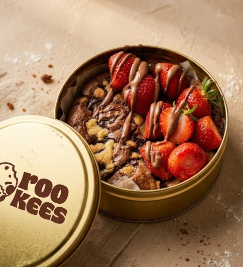
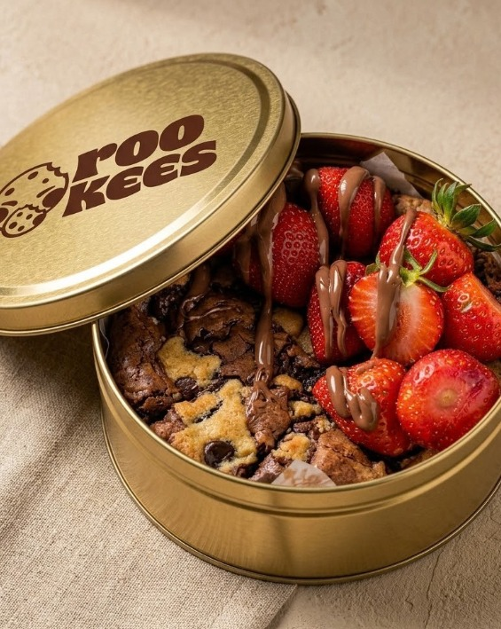

Rich brownie character
The brownie element is intended to bring a deep chocolate flavour and a soft, satisfying bite to the overall experience.
GET TO KNOW ROOKEES
Rookees brings the comforting richness of brownies together with the familiar charm of cookies. A product concept built around flavour, texture, and the little details that make a sweet treat memorable.
A product concept we're developing with care, one detail at a time.

THE IDEA ON A PLATE
The idea behind Rookees is simple: combine two beloved dessert experiences into one product that feels familiar, exciting, and worth sharing.
The brownie element is intended to bring a deep chocolate flavour and a soft, satisfying bite to the overall experience.
The cookie element adds contrast to the concept, creating an opportunity to balance different textures in every bite.
Thoughtful presentation and optional finishing details, such as chocolate drizzle, can make the product feel more distinctive and giftable.
These are the intended product characteristics. The final recipe, texture, and toppings will depend on product testing.

QUALITY STARTS WITH THE DETAILS
A good-looking dessert is only the beginning. Our goal is to develop a product that delivers a consistent and enjoyable experience, from its first impression to its last bite.
Evaluate chocolate, flour, butter or suitable alternatives, sugar, eggs, and other recipe components based on flavour, freshness, consistency, and cost.
Test sweetness, chocolate intensity, softness, and texture contrast to find a combination that works well together.
Work toward repeatable portions, hygienic preparation, appropriate storage, and clear handling guidance.
Ingredient specifications and quality procedures will be finalised as the recipe and production workflow develop.
FROM IDEA TO PRODUCT
We approach product development as a series of small, deliberate improvements—not a rush to get something on the shelf.
Experiment with ingredient proportions and combinations to establish a promising brownie-cookie base.
Review flavour, texture, appearance, portion size, and how well the components work together.
Gather feedback from potential customers and use it to identify which parts of the product need refinement.
Work toward a repeatable recipe, practical preparation guidelines, and packaging suitable for the final product.
PRESENTATION WITH PURPOSE
Packaging is part of the Rookees experience. We are exploring a circular gold-toned container that gives the product a distinctive presentation while keeping practicality in mind.
Consider a secure closure and food-contact-safe materials appropriate for the final product and its storage needs.
Explore a packaging structure that is convenient to hold, transport, open, and enjoy.
Develop a consistent visual identity through colour, labelling, and finishing details without unnecessary clutter.
The final packaging material, dimensions, food-contact suitability, and design are still subject to evaluation.
Circular form · Gold-toned finish · Thoughtful presentation
WHAT WE WANT ROOKEES TO STAND FOR
From recipe decisions to the way the product is presented.
Learning from real responses rather than relying on assumptions.
Creating a dessert experience people can enjoy and remember.
HELP US SHAPE ROOKEES
We're building Rookees step by step. Tell us what you think about the concept and what you'd love to see next.